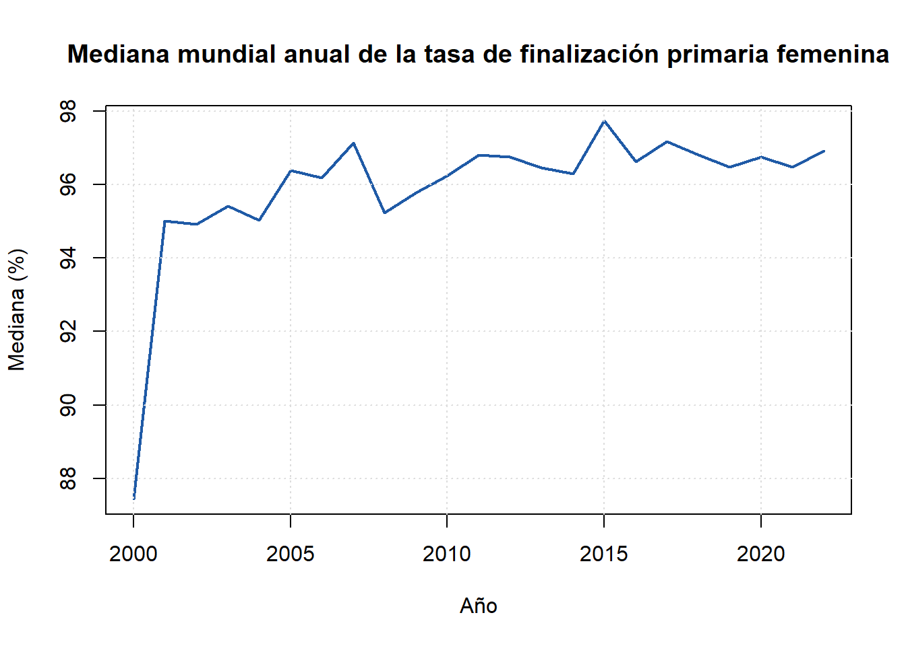
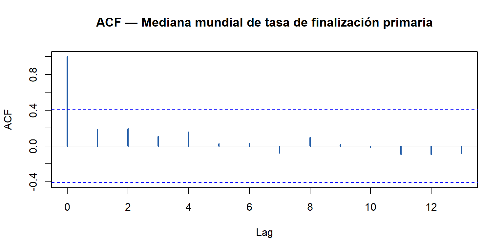
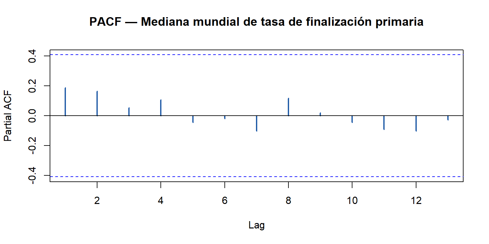

Chapter 2 Carga de datos
2.1 Fuentes y características de los datos
Para este análisis se utilizaron datos provenientes del World Development Indicators (WDI), la principal base estadística del Banco Mundial (Banco Mundial 2023). Esta fuente recopila, estandariza y publica indicadores socioeconómicos comparables entre países, lo que permite estudiar tendencias de desarrollo humano, educativo, económico y demográfico a nivel global.
El indicador seleccionado es Primary completion rate, female (% of relevant age group) (SE.PRM.CMPT.FE.ZS), que mide el porcentaje de niñas que completan el último grado de educación primaria dentro de la edad oficial correspondiente. Este indicador es ampliamente utilizado para evaluar el progreso en igualdad de género en educación, así como para analizar barreras estructurales que afectan la permanencia escolar (UNESCO 2019).
Los datos del WDI están armonizados entre países, actualizados anualmente y validados por organismos internacionales, lo que garantiza comparabilidad y consistencia metodológica a lo largo del análisis.
2.2 Importación y preparación inicial de los datos
Para importar los datos utilizamos la función WDI() del paquete homónimo de R (Arel-Bundock 2022), que actúa como interfaz con la API oficial del Banco Mundial. Esta función permite especificar países, indicadores y rango de años, y devuelve un data frame estructurado en formato panel, garantizando reproducibilidad a lo largo del análisis.
2.3 Limpieza y organización del dataset
Antes de proceder con el análisis estadístico, es necesario asegurar que el dataset sea coherente y analíticamente utilizable. Para ello, eliminamos columnas redundantes, estandarizamos los nombres de las variables, separamos los agregados regionales de los países individuales y manejamos los datos faltantes.
Las columnas iso2c e iso3c no aportan información adicional relevante para este análisis, ya que el nombre del país es suficiente para identificar cada observación. Por ello, se eliminan para simplificar la estructura, y se renombran las variables principales con etiquetas más intuitivas.
# Eliminamos columnas redundantes y renombramos variables
df <- df %>%
select(-iso2c, -iso3c) %>%
rename(
pais = country,
anio = year,
tasa_fin = SE.PRM.CMPT.FE.ZS
)La base del Banco Mundial incluye tanto agregados regionales como países individuales. Las primeras 1.127 filas corresponden a agrupaciones geográficas (África Subsahariana, América Latina, etc.), mientras que desde la fila 1.128 en adelante se encuentran los países individuales. Esta separación es fundamental para los análisis comparativos posteriores.
Antes de iniciar el análisis, verificamos la presencia de valores faltantes en el subconjunto de países individuales (df_2).
# Conteo de NA por variable
na_por_variable <- colSums(is.na(df_2))
cat("Total de valores faltantes:", sum(na_por_variable), "\n")## Total de valores faltantes: 1999## Valores faltantes por variable:## pais anio tasa_fin
## 0 0 1999Se identificaron 1.987 datos faltantes, todos concentrados en la columna tasa_fin, correspondientes a países que no reportaron su información en ciertos años. Dado que estas observaciones no aportan información estadística, se eliminan antes de continuar.
2.4 Análisis de series de tiempo
Una vez limpio el dataset, construimos la serie temporal de la mediana mundial anual de la tasa de finalización primaria femenina para el período 2000–2022. Trabajar con la mediana, en lugar de la media, es más robusto dado que la distribución entre países es asimétrica. Esta serie permite diagnosticar si la variable presenta tendencia, raíz unitaria o estructura autoregresiva, aspectos fundamentales antes de aplicar cualquier modelo de pronóstico.
library(tseries)
library(forecast)
# Construir serie temporal: mediana mundial por año
serie_anual <- df_2 %>%
group_by(anio) %>%
summarise(mediana = median(tasa_fin, na.rm = TRUE), .groups = "drop") %>%
arrange(anio)
# Convertir a objeto ts (frecuencia anual)
ts_mediana <- ts(serie_anual$mediana, start = 2000, frequency = 1)
# Visualizar la serie
plot(ts_mediana,
main = "Mediana mundial anual de la tasa de finalización primaria femenina",
ylab = "Mediana (%)",
xlab = "Año",
col = "#1F5AA6",
lwd = 2)
grid(col = "#DDDDDD")
2.4.1 Prueba ADF (Augmented Dickey-Fuller)
La prueba ADF evalúa la hipótesis nula de que la serie tiene raíz unitaria (es decir, es no estacionaria). Un p-valor inferior a 0,05 permite rechazar esta hipótesis y concluir que la serie es estacionaria, condición deseable para muchos modelos de series de tiempo.
library(tseries)
# Prueba ADF sobre la serie de medianas anuales
adf_resultado <- adf.test(ts_mediana)
cat("=== Prueba Augmented Dickey-Fuller ===\n")## === Prueba Augmented Dickey-Fuller ===## Estadístico de prueba: -2.5138## p-valor: 0.3766## Rezagos utilizados: 2if (adf_resultado$p.value < 0.05) {
cat("Conclusión: Se rechaza H0 → la serie ES estacionaria (p < 0.05).\n")
} else {
cat("Conclusión: No se rechaza H0 → la serie NO es estacionaria (p ≥ 0.05).\n")
cat("Se recomienda aplicar diferenciación antes de ajustar modelos ARIMA.\n")
}## Conclusión: No se rechaza H0 → la serie NO es estacionaria (p ≥ 0.05).
## Se recomienda aplicar diferenciación antes de ajustar modelos ARIMA.2.4.2 Función de Autocorrelación (ACF)
La ACF mide la correlación entre la serie y sus propios rezagos. Patrones de decaimiento lento indican no estacionariedad o tendencia; picos significativos en rezagos específicos sugieren componentes autoregresivos o de medias móviles.
# ACF de la serie original
acf(ts_mediana,
main = "ACF — Mediana mundial de tasa de finalización primaria",
col = "#1F5AA6",
lwd = 2)
2.4.3 Función de Autocorrelación Parcial (PACF)
La PACF mide la correlación entre la serie y un rezago específico, eliminando el efecto de los rezagos intermedios. Los picos que superan las bandas de confianza (líneas discontinuas azules) indican el orden autoregresivo (p) sugerido para un modelo AR o ARIMA.
# PACF de la serie original
pacf(ts_mediana,
main = "PACF — Mediana mundial de tasa de finalización primaria",
col = "#1F5AA6",
lwd = 2)
La serie temporal de la mediana mundial muestra una tendencia ascendente clara a lo largo del período 2000–2022, lo que es consistente con el progreso global en acceso a la educación primaria femenina. El resultado de la prueba ADF indica si esta tendencia implica una raíz unitaria formal: si la serie no es estacionaria, los modelos de pronóstico deben aplicarse sobre la primera diferencia de la variable. La ACF, por su parte, refleja el grado de persistencia temporal del indicador —correlaciones altas en rezagos consecutivos son esperables dado el carácter gradual de los cambios educativos—, mientras que la PACF permite identificar el orden autoregresivo apropiado para modelar la dinámica de la serie una vez que se controla por la tendencia.